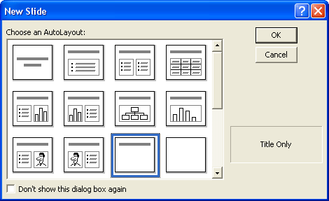
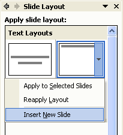
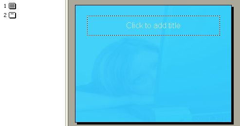
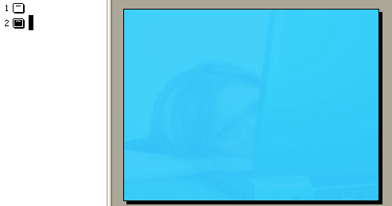
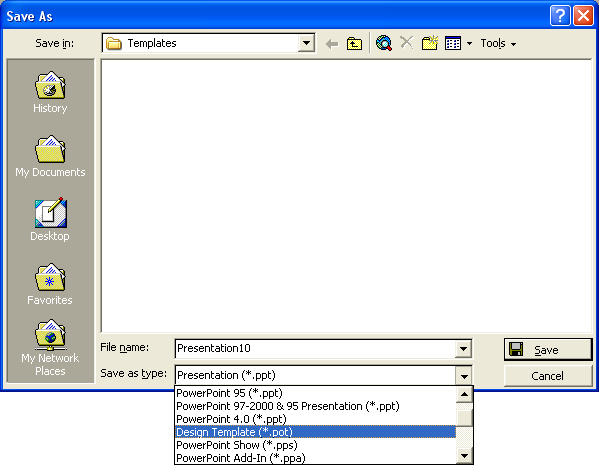
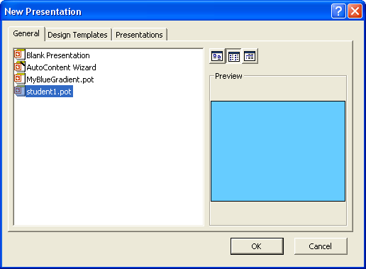

Free
powerpoint
Tutorials
|
Free
powerpoint
Tutorials
|
|
 home home |
Stay at Home and Learn | ||||
Add a Title Slide to a Design Template |
|||||
|
Now that you have formatted the Master Slide, you can add a Title slide. A lot of the time, you'd want this to be different from the Master. Click Insert > New Slide from the menu bars at the top of PowerPoint. Insert a new Title slide:  PowerPoint 2000
 PowerPoint 2003
You should then have two slides in PowerPoint. However, the Title slide will be the second slide, and we want this to be the first, because it will be the opening screen. To move the Title slide to the start, click View > Slide Sorter
from the menu bar. In Slide Sorter view, click on slide 2. Hold down
your left mouse button and drag it to before slide 1. Then click View
> Normal to get back to the main PowerPoint screen. In Outline
View on the left, click on Slide 1. This should now be your Title slide.
Click on Slide 2 and it should be blank, with just the background. Here's
what your slide 1 should look like:  And here's the second slide:  So our Design template has two slides in it so far - a Tile slide, and a Master Slide. (Although the Master Slide is blank in our presentation, when you save it as a Design Template, it will retain all the formatting you did in Master Slide view.) We can now save this as a Design Template. From the PowerPoint menu bar at the top, click File > Saves As. From the Save As box, select Design Template from Save as type:  Type a name for your template, and click Save. Once your design template is saved, you can create a new PowerPoint Presentation with all the formatting already in place. To test it out, click File > New. Your presentation will be on the General tab in PowerPoint 2000, and on the Task Pane in PowerPoint 2003. In the image below (2000), we have saved the design template with the name Student1 (notice that the file ending is .pot):  Click OK and your template will be loaded. Creating a Design Template can save you a lot of time and effort, especially if you're creating PowerPoint presentations for work.
In the next part, we'll move on and look at Action Buttons.
|
||||